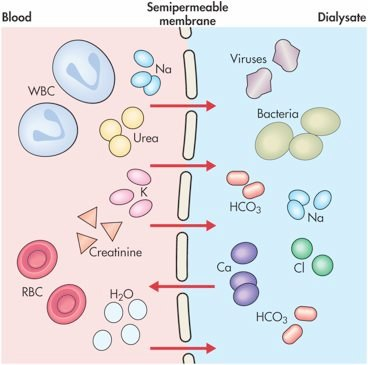
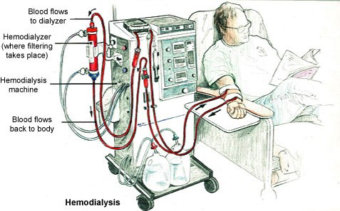

Review · Topic 10
Renal
Oliguria
For further study, see Med Surg I Week 4 – Acute Kidney Injury.
Oliguria: Decreased Urine Output
- Under 30 mL/hr: the magic number, and the one preferred. Waiting to see 24 hours of output may let an AKI worsen significantly.
- Under 400 mL in 24 hours: the other loose definition.
- Next best action: notify the provider, unless the cause is something the nurse can troubleshoot, such as a kinked Foley.
- In AKI: the oliguric phase, first of three: oliguric, diuretic, recovery. Begins about 1 day after a hypotensive event and lasts 1 to 3 weeks.
- Then: fluid, potassium and wastes are retained. See why each manifestation happens, below.
BUN and Creatinine
For further study, see Med Surg I Week 4 – Urinary Labs and Diagnostics.
| Lab | Normal | What It Means | What Affects It |
|---|---|---|---|
| Creatinine | 0.5 to 1.2 mg/dL |
|
|
| BUN (blood urea nitrogen) | 10 to 20 mg/dL |
|
|
| eGFR (estimated glomerular filtration rate) | 90 mL/min or above |
|
|
Azotemia
- A raised BUN and creatinine: nitrogenous wastes building up in the blood. A lab finding.
- With symptoms, it is called uremia. The two words are often used together.
Function of the Kidneys
What the Kidneys Do
- Filter the blood: in each nephron, the kidney's working unit, the glomerulus filters the blood and the tubules take back what the body needs.
- Excrete wastes and drugs: urea, creatinine and other wastes leave in the urine, with many drugs.
- Balance fluid and electrolytes: keep or excrete water, sodium, potassium, calcium, phosphorus and magnesium, as the body needs.
- Regulate the pH and the blood pressure, make erythropoietin, activate vitamin D: see below.
The Kidneys in Acid-Base Balance
For further study, see Pathopharm II Week 2 – Acid-Base Imbalance.
What the Kidneys Do for the pH
- The third line of defense, after the buffers and the lungs. The last to alter the pH, in hours to days: the long-term regulators.
- The primary controller of bicarb (HCO3), the base: reabsorbed into the bloodstream, or excreted in the urine. Can also produce bicarb.
- Eliminate large amounts of acid (hydrogen ions), by active transport. Not carbonic acid, which the lungs control.
- The most effective regulator of pH, with normal kidney function.
- Manage an acidosis better than an alkalosis: holding on to bicarb is easier for them than excreting it.
How the kidneys compensate for an acidosis or an alkalosis is taught in the ABGs review
The Kidneys in Blood Pressure Regulation
Low Blood Flow Sensed
The kidneys sense a low BP or low blood flow, and release renin.
Angiotensin II
Renin starts a chain that ends in angiotensin II, made by ACE (angiotensin-converting enzyme). It constricts the arteries.
Aldosterone
Angiotensin II releases aldosterone from the adrenal glands: the kidneys keep sodium and water, and excrete potassium.
Blood Pressure Rises
Tighter arteries and more blood volume raise the BP.
The Kidneys in RBC Production
For further study, see Med Surg I Week 4 – Chronic Kidney Disease.
Erythropoietin
- Produced by the kidneys, and necessary for RBC production.
- End-stage kidney disease: decreased production, so the patient is quite severely anemic.
- Activity intolerance: little energy, and a need for a lot of rest. Provide rest periods.
- Anti-anemic agents, such as erythropoietin, are given. Monitor the H&H: past a certain hemoglobin, erythropoietin's risks outweigh its benefits.
Pre-Renal, Intrarenal and Post-Renal Causes
For further study, see Med Surg I Week 4 – Acute Kidney Injury.
| Cause | Where | What to Know |
|---|---|---|
| Pre-renal | Blood flow to the kidneys |
|
| Intrarenal | Inside the kidneys |
|
| Post-renal | The other side of the kidneys |
|
Each cause in the critically ill, with its examples, is taught in Acute Kidney Injury
CKD and End-Stage Renal Disease
For further study, see Med Surg I Week 4 – Chronic Kidney Disease and Med Surg I Week 4 – Acute Kidney Injury.
The Stages of CKD
| Stage | GFR (mL/min) | What It Looks Like |
|---|---|---|
| 1 | 90 or above | Kidney damage with a normal or increased GFR. Asymptomatic. |
| 2 | 60 to 89 | Mild decrease. Asymptomatic, possible hypertension. Most do not know they have CKD. |
| 3A | 45 to 59 | Moderate decrease. Hypertension, otherwise asymptomatic. The critical point to catch patients. |
| 3B | 30 to 44 | Moderate decrease, worse than 3A. Hypertension, otherwise asymptomatic. |
| 4 | 15 to 29 | Severe decrease. Manifestations become apparent: diagnosis usually happens here. The kidneys' physiologic reserve hides the loss until then. Prepare for dialysis or a kidney transplant. |
| 5 | Under 15, or on dialysis | Kidney failure, end-stage: uremic. Dialysis starts. |
Why Each Manifestation Happens
| Manifestation | Why It Happens |
|---|---|
| Fluid volume excess (edema) |
|
| Hypertension |
|
| Hyponatremia |
|
| Hyperkalemia |
|
| Hyperphosphatemia, hypermagnesemia |
|
| Metabolic acidosis |
|
| Uremia |
|
| Malnutrition |
|
| Anemia |
|
| Renal osteodystrophy |
|
| Infection |
|
The Renal Diet
For further study, see Med Surg I Week 4 – Chronic Kidney Disease.
| Part of the Diet | What to Know |
|---|---|
| Protein |
|
| Sodium, potassium, phosphate |
|
| Fluid |
|
| Supplements |
|
Intermittent Hemodialysis
For further study, see Med Surg I Week 4 – Chronic Kidney Disease.
How Hemodialysis Works
Diffusion
- Moves: particles.
- From: an area of higher to lower concentration.
Osmosis
- Moves: water.
- From: an area of lower to higher concentration.
What Happens in Hemodialysis
- Blood is pulled out through the access, run through the dialyzer, and put back. The filtering, the GFR, takes place in the dialyzer.
- The dialyzer is a semipermeable membrane outside the body. Substances move from the blood through it into the dialysate.
- The nephrologist sets the dialysate from the labs, by how much shifting is wanted. Less potassium than the blood, for one, so potassium diffuses out.
- Intermittent: 3 days a week. In end-stage disease, likely for the rest of their life, unless they get a transplant.


Advantages of Hemodialysis
- Rapid removal of fluid, urea and creatinine, and potassium.
Disadvantages of Hemodialysis
- Needs vascular access, and may need heparin.
- Stringent diet and fluid restrictions: dialysis is only 3 days a week. Between sessions, a patient who makes no urine can feel miserable.
- Hypotension during dialysis.
Vascular access for dialysis is taught in Acute Kidney Injury
Complications
Complications of Hemodialysis
- Disequilibrium syndrome: unique to hemodialysis. Most often in the first few treatments: the body is not used to so much fluid pulled off and put on so quickly. Disorientation, seizures, headache, agitation, nausea and vomiting.
- Decreased cardiac output: hemodialysis brings big shifts, which are hard on the heart.
- Also: cardiac dysrhythmias, infection, air embolism.
Hypotension, dysrhythmias and infection on IHD, with their causes, are taught in Acute Kidney Injury
Nursing Care
Drugs and Hemodialysis
- Drugs build up to toxic levels: not excreted, they circulate in their active form for prolonged periods. Doses may need altering: renal dosing.
- Some drugs are dialyzed out across the membrane, leaving subtherapeutic levels. Know which, and give them after dialysis.